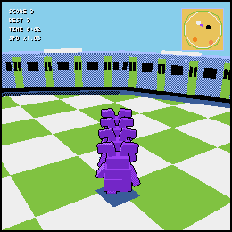

紫うさぎの隊列を操作する、Pyxel 製 3D スネークゲーム。
ボタンを押すと、ゲームが新しいタブで開きます。初回は読み込みに少し時間がかかります。仮想パッドはスマホ・タブレット専用で、PC では ON 版でも表示されません（PC ではキーボードかゲームパッドで操作します）。

うさぎは自動で前進します。餌のリスとオレンジの子を食べると 隊列が 1 体ずつ伸びてスコアが増え、食べるほど少しずつ速くなります。 フィールドは電車の車両が囲む 12 角形で、壁・自分の隊列・ペンギンに 当たるとゲームオーバーです。
| 操作 | キーボード | ゲームパッド |
|---|---|---|
| スタート / 決定 | ENTER | START / A ボタン |
| 旋回 | ← → または A / D | 十字キー 左右 |
| ブースト / ブレーキ | ↑ / W 、↓ / S | 十字キー 上下 |
| ジャンプ | SPACE | A ボタン |
| サウンド ON/OFF | M | — |
スマホ・タブレットでは仮想パッドでも操作できます。